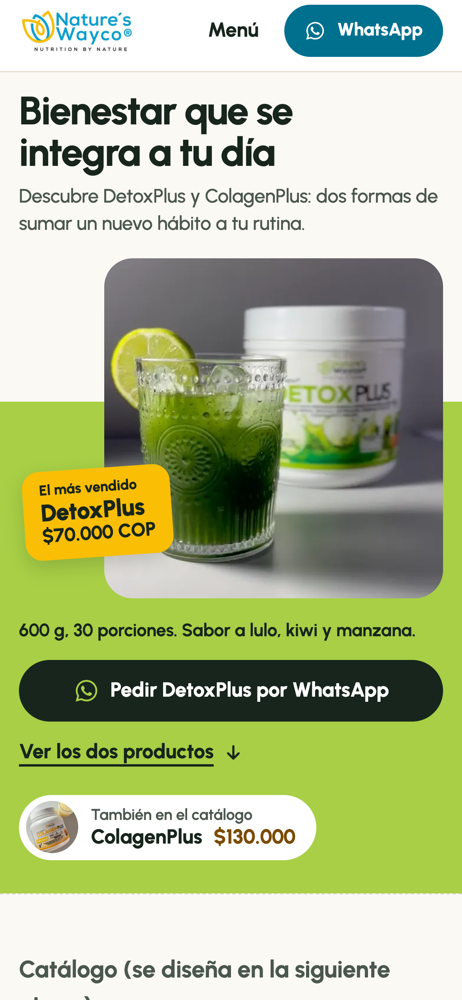
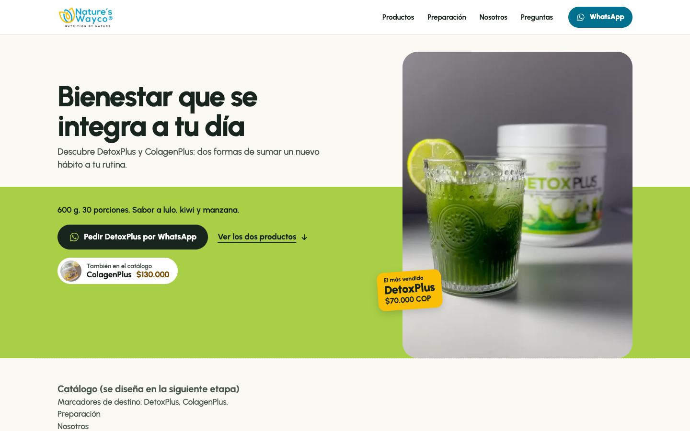
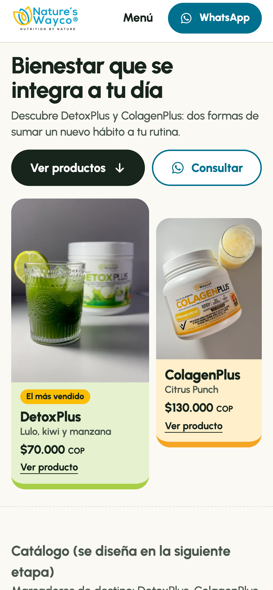
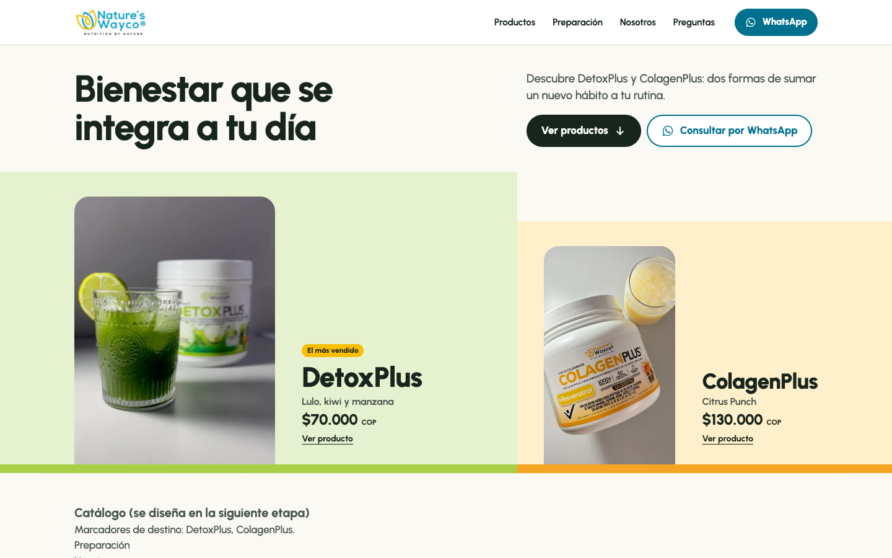

Portada: dos alternativas
Móvil 390 × 844 y escritorio 1440 × 900. Prototipos con material real; sin animación en las capturas.
A · El nivel (recomendada) — DetoxPlus servido, pedido directo por WhatsApp

Móvil 390 × 844

Escritorio 1440 × 900
B · El dúo — los dos productos en portada, exploración primero

Móvil 390 × 844

Escritorio 1440 × 900